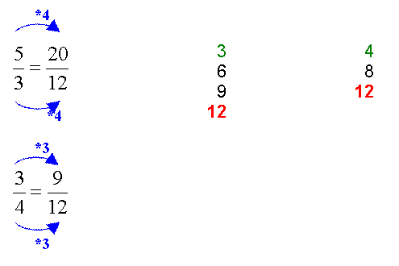

<html xmlns:v="urn:schemas-microsoft-com:vml"
xmlns:o="urn:schemas-microsoft-com:office:office"
xmlns:w="urn:schemas-microsoft-com:office:word"
xmlns="http://www.w3.org/TR/REC-html40">

<head>
<meta http-equiv=Content-Type content="text/html; charset=windows-1250">
<meta name=ProgId content=Word.Document>
<meta name=Generator content="Microsoft Word 10">
<meta name=Originator content="Microsoft Word 10">
<link rel=File-List href="tortekoa1pl_elemei/filelist.xml">
<link rel=Edit-Time-Data href="tortekoa1pl_elemei/editdata.mso">
<link rel=OLE-Object-Data href="tortekoa1pl_elemei/oledata.mso">
<!--[if !mso]>
<style>
v\:* {behavior:url(#default#VML);}
o\:* {behavior:url(#default#VML);}
w\:* {behavior:url(#default#VML);}
.shape {behavior:url(#default#VML);}
</style>
<![endif]-->
<title>Matek fogalmak,tételek az ált.isk-ban</title>
<!--[if gte mso 9]><xml>
 <o:DocumentProperties>
  <o:Author>PL</o:Author>
  <o:Template>Normal</o:Template>
  <o:LastAuthor>Pleszkán László</o:LastAuthor>
  <o:Revision>3</o:Revision>
  <o:TotalTime>117</o:TotalTime>
  <o:Created>2006-08-20T15:21:00Z</o:Created>
  <o:LastSaved>2006-08-20T15:46:00Z</o:LastSaved>
  <o:Pages>1</o:Pages>
  <o:Words>397</o:Words>
  <o:Characters>2132</o:Characters>
  <o:Company>PL</o:Company>
  <o:Lines>106</o:Lines>
  <o:Paragraphs>63</o:Paragraphs>
  <o:CharactersWithSpaces>2466</o:CharactersWithSpaces>
  <o:Version>10.2625</o:Version>
 </o:DocumentProperties>
</xml><![endif]--><!--[if gte mso 9]><xml>
 <w:WordDocument>
  <w:Zoom>80</w:Zoom>
  <w:SpellingState>Clean</w:SpellingState>
  <w:GrammarState>Clean</w:GrammarState>
  <w:HyphenationZone>21</w:HyphenationZone>
  <w:BrowserLevel>MicrosoftInternetExplorer4</w:BrowserLevel>
  <w:ValidateAgainstSchemas/>
  <w:SaveIfXMLInvalid>false</w:SaveIfXMLInvalid>
  <w:IgnoreMixedContent>false</w:IgnoreMixedContent>
  <w:AlwaysShowPlaceholderText>false</w:AlwaysShowPlaceholderText>
 </w:WordDocument>
</xml><![endif]-->
<style>
<!--
 /* Style Definitions */
 p.MsoNormal, li.MsoNormal, div.MsoNormal
	{mso-style-parent:"";
	margin:0cm;
	margin-bottom:.0001pt;
	mso-pagination:widow-orphan;
	font-size:12.0pt;
	font-family:"Times New Roman";
	mso-fareast-font-family:"Times New Roman";}
a:link, span.MsoHyperlink
	{color:blue;
	text-decoration:underline;
	text-underline:single;}
a:visited, span.MsoHyperlinkFollowed
	{color:blue;
	text-decoration:underline;
	text-underline:single;}
pre
	{margin:0cm;
	margin-bottom:.0001pt;
	mso-pagination:widow-orphan;
	font-size:10.0pt;
	font-family:"Courier New";
	mso-fareast-font-family:"Times New Roman";}
span.SpellE
	{mso-style-name:"";
	mso-spl-e:yes;}
span.GramE
	{mso-style-name:"";
	mso-gram-e:yes;}
@page Section1
	{size:595.3pt 841.9pt;
	margin:70.85pt 70.85pt 70.85pt 70.85pt;
	mso-header-margin:35.4pt;
	mso-footer-margin:35.4pt;
	mso-paper-source:0;}
div.Section1
	{page:Section1;}
-->
</style>
<!--[if gte mso 10]>
<style>
 /* Style Definitions */
 table.MsoNormalTable
	{mso-style-name:"Normál táblázat";
	mso-tstyle-rowband-size:0;
	mso-tstyle-colband-size:0;
	mso-style-noshow:yes;
	mso-style-parent:"";
	mso-padding-alt:0cm 5.4pt 0cm 5.4pt;
	mso-para-margin:0cm;
	mso-para-margin-bottom:.0001pt;
	mso-pagination:widow-orphan;
	font-size:10.0pt;
	font-family:"Times New Roman";}
table.MsoTableGrid
	{mso-style-name:"Rácsos táblázat";
	mso-tstyle-rowband-size:0;
	mso-tstyle-colband-size:0;
	border:solid windowtext 1.0pt;
	mso-border-alt:solid windowtext .5pt;
	mso-padding-alt:0cm 5.4pt 0cm 5.4pt;
	mso-border-insideh:.5pt solid windowtext;
	mso-border-insidev:.5pt solid windowtext;
	mso-para-margin:0cm;
	mso-para-margin-bottom:.0001pt;
	mso-pagination:widow-orphan;
	font-size:10.0pt;
	font-family:"Times New Roman";}
</style>
<![endif]--><!--[if gte mso 9]><xml>
 <w:LatentStyles DefLockedState="false" LatentStyleCount="156">  </w:LatentStyles>
</xml><![endif]--><!--[if gte mso 9]><xml>
 <o:shapedefaults v:ext="edit" spidmax="27650">
  <o:colormru v:ext="edit" colors="#ffe2c5,#eaeaea"/>
  <o:colormenu v:ext="edit" fillcolor="#eaeaea"/>
 </o:shapedefaults></xml><![endif]--><!--[if gte mso 9]><xml>
 <o:shapelayout v:ext="edit">
  <o:idmap v:ext="edit" data="1"/>
 </o:shapelayout></xml><![endif]-->
</head>

<body bgcolor="#EAEAEA" lang=HU link=blue vlink=blue style='tab-interval:35.45pt'>

<div class=Section1>

<div align=center>

<table class=MsoTableGrid border=0 cellspacing=0 cellpadding=0 width=662
 style='width:496.15pt;border-collapse:collapse;mso-yfti-tbllook:480;
 mso-padding-alt:0cm 5.4pt 0cm 5.4pt'>
 <tr style='mso-yfti-irow:0;mso-yfti-firstrow:yes'>
  <td colspan=3 valign=top style='padding:0cm 5.4pt 0cm 5.4pt'>
  <p class=MsoNormal><span style='font-size:13.0pt;font-family:Arial'><o:p>&nbsp;</o:p></span></p>
  <p class=MsoNormal><span style='font-size:13.0pt;font-family:Arial'><o:p>&nbsp;</o:p></span></p>
  </td>
 </tr>
 <tr style='mso-yfti-irow:1'>
  <td colspan=3 valign=top style='background:#00CCFF;padding:0cm 5.4pt 0cm 5.4pt'>
  <p class=MsoNormal><b style='mso-bidi-font-weight:normal'><span
  style='font-size:5.0pt;font-family:Arial;color:black'><o:p>&nbsp;</o:p></span></b></p>
  <p class=MsoNormal style='text-align:justify'><b style='mso-bidi-font-weight:
  normal'><span style='font-size:14.0pt;font-family:Arial;color:black'><span
  style='mso-spacerun:yes'>   </span>Azonos nevezõjû törtek összeadásakor az
  eredmény nevezõje a közös nevezõ lesz. A mûveletet a számlálókkal végezzük. <o:p></o:p></span></b></p>
  <p class=MsoNormal><b style='mso-bidi-font-weight:normal'><span
  style='font-size:5.0pt;font-family:Arial;color:black'><o:p>&nbsp;</o:p></span></b></p>
  </td>
 </tr>
 <tr style='mso-yfti-irow:2'>
  <td colspan=3 valign=top style='padding:0cm 5.4pt 0cm 5.4pt'>
  <p class=MsoNormal><b style='mso-bidi-font-weight:normal'><span
  style='font-size:14.0pt;font-family:Arial'><o:p>&nbsp;</o:p></span></b></p>
  <p class=MsoNormal><b style='mso-bidi-font-weight:normal'><span
  style='font-size:14.0pt;font-family:Arial'><span style='mso-spacerun:yes'>  
  </span>A végeredményt, ha lehet, vegyes számmá alakítjuk, és egyszerûsítjük.<o:p></o:p></span></b></p>
  </td>
 </tr>
 <tr style='mso-yfti-irow:3'>
  <td colspan=3 valign=top style='padding:0cm 5.4pt 0cm 5.4pt'>
  <p class=MsoNormal><b style='mso-bidi-font-weight:normal'><span
  style='font-family:Arial'><o:p>&nbsp;</o:p></span></b></p>
  </td>
 </tr>
 <tr style='mso-yfti-irow:4'>
  <td colspan=3 valign=top style='padding:0cm 5.4pt 0cm 5.4pt'>
  <p class=MsoNormal align=center style='text-align:center;tab-stops:54.0pt'><b
  style='mso-bidi-font-weight:normal'><span style='font-size:14.0pt;font-family:
  Arial;color:purple'>Példa<o:p></o:p></span></b></p>
  <p class=MsoNormal align=center style='text-align:center;tab-stops:54.0pt'><span
  style='font-size:13.0pt;font-family:Arial'><o:p>&nbsp;</o:p></span></p>
  </td>
 </tr>
 <tr style='mso-yfti-irow:5'>
  <td colspan=3 valign=top style='padding:0cm 5.4pt 0cm 5.4pt'>
  <p class=MsoNormal align=center style='text-align:center;tab-stops:54.0pt'><b
  style='mso-bidi-font-weight:normal'><span style='font-size:14.0pt;font-family:
  Arial;color:purple'>1.<o:p></o:p></span></b></p>
  <p class=MsoNormal><span style='font-size:13.0pt;font-family:Arial'><o:p>&nbsp;</o:p></span></p>
  </td>
 </tr>
 <tr style='mso-yfti-irow:6'>
  <td colspan=3 valign=top style='padding:0cm 5.4pt 0cm 5.4pt'>
  <p class=MsoNormal align=center style='text-align:center'><span
  style='font-size:10.0pt'><span style='position:relative;top:12.0pt;
  mso-text-raise:-12.0pt'><!--[if gte vml 1]><v:shapetype id="_x0000_t75"
   coordsize="21600,21600" o:spt="75" o:preferrelative="t" path="m@4@5l@4@11@9@11@9@5xe"
   filled="f" stroked="f">
   <v:stroke joinstyle="miter"/>
   <v:formulas>
    <v:f eqn="if lineDrawn pixelLineWidth 0"/>
    <v:f eqn="sum @0 1 0"/>
    <v:f eqn="sum 0 0 @1"/>
    <v:f eqn="prod @2 1 2"/>
    <v:f eqn="prod @3 21600 pixelWidth"/>
    <v:f eqn="prod @3 21600 pixelHeight"/>
    <v:f eqn="sum @0 0 1"/>
    <v:f eqn="prod @6 1 2"/>
    <v:f eqn="prod @7 21600 pixelWidth"/>
    <v:f eqn="sum @8 21600 0"/>
    <v:f eqn="prod @7 21600 pixelHeight"/>
    <v:f eqn="sum @10 21600 0"/>
   </v:formulas>
   <v:path o:extrusionok="f" gradientshapeok="t" o:connecttype="rect"/>
   <o:lock v:ext="edit" aspectratio="t"/>
  </v:shapetype><v:shape id="_x0000_i1025" type="#_x0000_t75" style='width:243.75pt;
   height:49.5pt;mso-position-horizontal:absolute' o:ole="">
   <v:imagedata src="tortekoa1pl_elemei/image001.wmz" o:title=""/>
  </v:shape><![endif]--><![if !vml]><![endif]></span><!--[if gte mso 9]><xml>
   <o:OLEObject Type="Embed" ProgID="Equation.3" ShapeID="_x0000_i1025"
    DrawAspect="Content" ObjectID="_1217601197">
   </o:OLEObject>
  </xml><![endif]--></span><span style='font-size:13.0pt;font-family:Arial'><o:p></o:p></span></p>
  </td>
 </tr>
 <tr style='mso-yfti-irow:7'>
  <td colspan=3 valign=top style='padding:0cm 5.4pt 0cm 5.4pt'>
  <p class=MsoNormal><span style='font-size:13.0pt;font-family:Arial'><o:p>&nbsp;</o:p></span></p>
  </td>
 </tr>
 <tr style='mso-yfti-irow:8'>
  <td colspan=3 valign=top style='padding:0cm 5.4pt 0cm 5.4pt'>
  <p class=MsoNormal><span style='font-size:13.0pt;font-family:Arial'><o:p>&nbsp;</o:p></span></p>
  <p class=MsoNormal><span style='font-size:13.0pt;font-family:Arial'><o:p>&nbsp;</o:p></span></p>
  </td>
 </tr>
 <tr style='mso-yfti-irow:9'>
  <td colspan=3 valign=top style='padding:0cm 5.4pt 0cm 5.4pt'>
  <p class=MsoNormal align=center style='text-align:center;tab-stops:54.0pt'><b
  style='mso-bidi-font-weight:normal'><span style='font-size:14.0pt;font-family:
  Arial;color:purple'>2.<o:p></o:p></span></b></p>
  <p class=MsoNormal><span style='font-size:13.0pt;font-family:Arial'><o:p>&nbsp;</o:p></span></p>
  </td>
 </tr>
 <tr style='mso-yfti-irow:10'>
  <td colspan=3 valign=top style='padding:0cm 5.4pt 0cm 5.4pt'>
  <p class=MsoNormal align=center style='text-align:center'><span
  style='font-size:13.0pt;font-family:Arial'><span style='position:relative;
  top:12.0pt;mso-text-raise:-12.0pt'><!--[if gte vml 1]><v:shape id="_x0000_i1029"
   type="#_x0000_t75" style='width:222.75pt;height:49.5pt' o:ole="">
   <v:imagedata src="tortekoa1pl_elemei/image003.wmz" o:title=""/>
  </v:shape><![endif]--><![if !vml]><![endif]></span><!--[if gte mso 9]><xml>
   <o:OLEObject Type="Embed" ProgID="Equation.3" ShapeID="_x0000_i1029"
    DrawAspect="Content" ObjectID="_1217601198">
   </o:OLEObject>
  </xml><![endif]--><o:p></o:p></span></p>
  </td>
 </tr>
 <tr style='mso-yfti-irow:11'>
  <td colspan=3 valign=top style='padding:0cm 5.4pt 0cm 5.4pt'><pre><span
  style='font-size:13.0pt;font-family:Arial'><o:p>&nbsp;</o:p></span></pre><pre><span
  style='font-size:13.0pt;font-family:Arial'><o:p>&nbsp;</o:p></span></pre><pre><span
  style='font-size:13.0pt;font-family:Arial'><o:p>&nbsp;</o:p></span></pre></td>
 </tr>
 <tr style='mso-yfti-irow:12'>
  <td valign=top style='padding:0cm 5.4pt 0cm 5.4pt'><pre><span
  style='font-size:13.0pt;font-family:Arial'><o:p>&nbsp;</o:p></span></pre></td>
  <td valign=top style='border:none;border-top:solid green 3.0pt;padding:0cm 5.4pt 0cm 5.4pt'><pre><span
  style='font-size:13.0pt;font-family:Arial'><o:p>&nbsp;</o:p></span></pre></td>
  <td valign=top style='padding:0cm 5.4pt 0cm 5.4pt'><pre><span
  style='font-size:13.0pt;font-family:Arial'><o:p>&nbsp;</o:p></span></pre><pre><span
  style='font-size:13.0pt;font-family:Arial'><o:p>&nbsp;</o:p></span></pre></td>
 </tr>
 <tr style='mso-yfti-irow:13'>
  <td colspan=3 valign=top style='padding:0cm 5.4pt 0cm 5.4pt'><pre
  style='text-align:justify;text-indent:16.4pt'><b style='mso-bidi-font-weight:
  normal'><span style='font-size:14.0pt;font-family:Arial;color:black'>Mielõtt elmélyednénk a különbözõ nevezõjû törtek összeadásának<o:p></o:p></span></b></pre><pre
  style='text-align:justify'><b style='mso-bidi-font-weight:normal'><span
  style='font-size:14.0pt;font-family:Arial;color:black'>rejtelmeiben, válaszoljunk a következõ kérdésre!<o:p></o:p></span></b></pre><pre
  style='text-align:justify;text-indent:16.4pt'><b style='mso-bidi-font-weight:
  normal'><span style='font-size:14.0pt;font-family:Arial;color:black'><o:p>&nbsp;</o:p></span></b></pre><pre
  style='text-align:justify;text-indent:16.4pt'><b style='mso-bidi-font-weight:
  normal'><span style='font-size:14.0pt;font-family:Arial;color:black'>Mennyi 5 alma, meg 3 alma?<o:p></o:p></span></b></pre><pre
  style='text-align:justify;text-indent:16.4pt'><b style='mso-bidi-font-weight:
  normal'><span style='font-size:14.0pt;font-family:Arial;color:black'><o:p>&nbsp;</o:p></span></b></pre><pre
  style='text-align:justify;text-indent:16.4pt'><b style='mso-bidi-font-weight:
  normal'><span style='font-size:14.0pt;font-family:Arial;color:black'>8 alma. <o:p></o:p></span></b></pre><pre
  style='text-align:justify;text-indent:16.4pt'><b style='mso-bidi-font-weight:
  normal'><span style='font-size:14.0pt;font-family:Arial;color:black'><o:p>&nbsp;</o:p></span></b></pre><pre
  style='text-align:justify;text-indent:16.4pt'><b style='mso-bidi-font-weight:
  normal'><span style='font-size:14.0pt;font-family:Arial;color:black'>Hát ez egyszerû volt.<o:p></o:p></span></b></pre><pre
  style='text-align:justify;text-indent:16.4pt'><b style='mso-bidi-font-weight:
  normal'><span style='font-size:14.0pt;font-family:Arial;color:black'><o:p>&nbsp;</o:p></span></b></pre><pre
  style='text-align:justify;text-indent:16.4pt'><b style='mso-bidi-font-weight:
  normal'><span style='font-size:14.0pt;font-family:Arial;color:black'>No és mennyi 5 alma, meg 3 körte?<o:p></o:p></span></b></pre><pre
  style='text-align:justify;text-indent:16.4pt'><b style='mso-bidi-font-weight:
  normal'><span style='font-size:14.0pt;font-family:Arial;color:black'><o:p>&nbsp;</o:p></span></b></pre><pre
  style='text-align:justify;text-indent:16.4pt'><b style='mso-bidi-font-weight:
  normal'><span style='font-size:14.0pt;font-family:Arial;color:black'>Egy kis gondolkodás után rájöhetünk arra, hogy az összeadás<o:p></o:p></span></b></pre><pre
  style='text-align:justify'><b style='mso-bidi-font-weight:normal'><span
  style='font-size:14.0pt;font-family:Arial;color:black'>elvégzéséhez szükséges a két dolognak egy közös nevet <o:p></o:p></span></b></pre><pre
  style='text-align:justify'><b style='mso-bidi-font-weight:normal'><span
  style='font-size:14.0pt;font-family:Arial;color:black'>keresnünk. Esetünkben ez lehet például <span
  class=GramE>a</span>: gyümölcs.<o:p></o:p></span></b></pre><pre
  style='text-align:justify'><b style='mso-bidi-font-weight:normal'><span
  style='font-size:14.0pt;font-family:Arial;color:black'><o:p>&nbsp;</o:p></span></b></pre><pre
  style='text-align:justify;text-indent:16.4pt'><b style='mso-bidi-font-weight:
  normal'><span style='font-size:14.0pt;font-family:Arial;color:black'>Ezek után a válasz: 5 alma, meg 3 körte együtt 8 gyümölcs.<o:p></o:p></span></b></pre><pre
  style='text-align:justify;text-indent:16.4pt'><b style='mso-bidi-font-weight:
  normal'><span style='font-size:14.0pt;font-family:Arial;color:black'><o:p>&nbsp;</o:p></span></b></pre><pre
  style='text-align:justify;text-indent:16.4pt'><b style='mso-bidi-font-weight:
  normal'><span style='font-size:14.0pt;font-family:Arial;color:black'>Mindennapjainknak velejárója a közös név keresése. <o:p></o:p></span></b></pre><pre
  style='text-align:justify;text-indent:16.4pt'><b style='mso-bidi-font-weight:
  normal'><span style='font-size:14.0pt;font-family:Arial;color:black'>Ezt tesszük a következõ esetekben is:<o:p></o:p></span></b></pre><pre
  style='text-align:justify;text-indent:16.4pt'><b style='mso-bidi-font-weight:
  normal'><span style='font-size:14.0pt;font-family:Arial;color:black'><o:p>&nbsp;</o:p></span></b></pre><pre
  style='text-align:justify;text-indent:16.4pt'><b style='mso-bidi-font-weight:
  normal'><span style='font-size:14.0pt;font-family:Arial;color:black'>4 fiú + 5 lány = 9 gyerek.<o:p></o:p></span></b></pre><pre
  style='text-align:justify;text-indent:16.4pt'><b style='mso-bidi-font-weight:
  normal'><span style='font-size:14.0pt;font-family:Arial;color:black'>3 autó + 11 kerékpár = 14 jármû.<o:p></o:p></span></b></pre><pre
  style='text-align:justify;text-indent:16.4pt'><b style='mso-bidi-font-weight:
  normal'><span style='font-size:14.0pt;font-family:Arial;color:black'>6 szék + 4 asztal + 2 szekrény = 12 bútor.<o:p></o:p></span></b></pre><pre
  style='text-align:justify;text-indent:16.4pt'><b style='mso-bidi-font-weight:
  normal'><span style='font-size:14.0pt;font-family:Arial;color:black'>Tudjuk, hogy minden törtnek (darabnak) neve van. <o:p></o:p></span></b></pre><pre
  style='text-align:justify;text-indent:16.4pt'><b style='mso-bidi-font-weight:
  normal'><span style='font-size:14.0pt;font-family:Arial;color:black'>Az elõzõekben kiderült: két dolgot csak akkor lehet <o:p></o:p></span></b></pre><pre><b
  style='mso-bidi-font-weight:normal'><span style='font-size:14.0pt;font-family:
  Arial;color:black'>összeadni, ha azonos a nevük.<o:p></o:p></span></b></pre><pre><b
  style='mso-bidi-font-weight:normal'><span style='font-size:14.0pt;font-family:
  Arial;color:black'>Talán nem meglepõ, a törtekkel sincs másként.</span></b><b
  style='mso-bidi-font-weight:normal'><span style='font-size:12.0pt;font-family:
  Arial;color:black'><o:p></o:p></span></b></pre></td>
 </tr>
 <tr style='mso-yfti-irow:14'>
  <td colspan=3 valign=top style='padding:0cm 5.4pt 0cm 5.4pt'><pre><b
  style='mso-bidi-font-weight:normal'><span style='font-size:12.0pt;font-family:
  Arial;color:black'><o:p>&nbsp;</o:p></span></b></pre></td>
 </tr>
 <tr style='mso-yfti-irow:15'>
  <td colspan=3 valign=top style='background:#00CCFF;padding:0cm 5.4pt 0cm 5.4pt'><pre><b
  style='mso-bidi-font-weight:normal'><span style='font-size:5.0pt;font-family:
  Arial;color:black'><o:p>&nbsp;</o:p></span></b></pre><pre style='text-align:
  justify'><b style='mso-bidi-font-weight:normal'><span style='font-size:14.0pt;
  font-family:Arial;color:black'><span style='mso-spacerun:yes'>   </span>Különbözõ nevezõjû törteket az összeadás elõtt közös <o:p></o:p></span></b></pre><pre
  style='text-align:justify'><b style='mso-bidi-font-weight:normal'><span
  style='font-size:14.0pt;font-family:Arial;color:black'>nevezõre (<i
  style='mso-bidi-font-style:normal'>közös névre</i>) kell hozni.<o:p></o:p></span></b></pre><pre><b
  style='mso-bidi-font-weight:normal'><span style='font-size:5.0pt;font-family:
  Arial;color:black'><o:p>&nbsp;</o:p></span></b></pre></td>
 </tr>
 <tr style='mso-yfti-irow:16'>
  <td colspan=3 valign=top style='padding:0cm 5.4pt 0cm 5.4pt'><pre><span
  style='font-size:13.0pt;font-family:Arial'><o:p>&nbsp;</o:p></span></pre></td>
 </tr>
 <tr style='mso-yfti-irow:17'>
  <td colspan=3 valign=top style='padding:0cm 5.4pt 0cm 5.4pt'><pre><span
  style='font-size:13.0pt;font-family:Arial'><o:p>&nbsp;</o:p></span></pre></td>
 </tr>
 <tr style='mso-yfti-irow:18'>
  <td colspan=3 valign=top style='padding:0cm 5.4pt 0cm 5.4pt'>
  <p class=MsoNormal style='text-align:justify'><b style='mso-bidi-font-weight:
  normal'><span style='font-size:14.0pt;font-family:Arial;color:black'><span
  style='mso-spacerun:yes'>   </span>(Tehát a közös névre hozás nem a
  matematika sajátja. Mindennapjaink szerves része. Mielõtt három széket, és
  négy asztalt összeadnánk, közös nevet keresünk hozzájuk, és így lesz belõlük
  hét <i style='mso-bidi-font-style:normal'>bútor</i>. Ugyanígy járunk el akkor
  is, amikor a két autó és két motor összege négy <i style='mso-bidi-font-style:
  normal'>jármû</i> lesz.)</span></b><span style='font-size:14.0pt'><o:p></o:p></span></p>
  <pre><span style='font-size:13.0pt;font-family:Arial'><o:p>&nbsp;</o:p></span></pre></td>
 </tr>
 <tr style='mso-yfti-irow:19'>
  <td colspan=3 valign=top style='padding:0cm 5.4pt 0cm 5.4pt'><pre><span
  style='font-size:13.0pt;font-family:Arial'><o:p>&nbsp;</o:p></span></pre></td>
 </tr>
 <tr style='mso-yfti-irow:20'>
  <td colspan=3 valign=top style='padding:0cm 5.4pt 0cm 5.4pt'>
  <p class=MsoNormal align=center style='text-align:center;tab-stops:54.0pt'><b
  style='mso-bidi-font-weight:normal'><span style='font-size:14.0pt;font-family:
  Arial;color:purple'>Példa<o:p></o:p></span></b></p>
  <pre><span style='font-size:13.0pt;font-family:Arial'><o:p>&nbsp;</o:p></span></pre></td>
 </tr>
 <tr style='mso-yfti-irow:21'>
  <td colspan=3 valign=top style='padding:0cm 5.4pt 0cm 5.4pt'><pre
  style='text-align:center'><span style='font-size:13.0pt;font-family:Arial;
  position:relative;top:12.0pt;mso-text-raise:-12.0pt'><!--[if gte vml 1]><v:shape
   id="_x0000_i1026" type="#_x0000_t75" style='width:59.25pt;height:48pt;
   mso-position-horizontal:absolute'>
   <v:imagedata src="tortekoa1pl_elemei/image005.wmz" o:title=""/>
  </v:shape><![endif]--><![if !vml]><![endif]></span><span
  style='font-size:13.0pt;font-family:Arial'><o:p></o:p></span></pre></td>
 </tr>
 <tr style='mso-yfti-irow:22'>
  <td colspan=3 valign=top style='padding:0cm 5.4pt 0cm 5.4pt'>
  <p class=MsoNormal align=center style='text-align:center;tab-stops:54.0pt'><span
  style='font-size:13.0pt;font-family:Arial'><o:p>&nbsp;</o:p></span></p>
  <p class=MsoNormal align=center style='text-align:center;tab-stops:54.0pt'><span
  style='font-size:13.0pt;font-family:Arial'><o:p>&nbsp;</o:p></span></p>
  </td>
 </tr>
 <tr style='mso-yfti-irow:23'>
  <td colspan=3 valign=top style='padding:0cm 5.4pt 0cm 5.4pt'>
  <p class=MsoNormal style='text-align:justify;text-indent:18.9pt;tab-stops:
  54.0pt'><b style='mso-bidi-font-weight:normal'><span style='font-size:14.0pt;
  font-family:Arial'>Látható, hogy a nevezõk nem egyenlõk, ezért a két tört
  ebben a formájában nem adható össze. Hozzuk le a törteket a „névadóra”, ahol
  közös nevet keresünk nekik! Vagyis közös nevezõre hozzuk a törteket. Elsõ
  lépésként általában célszerû megpróbálkozni a törtek egyszerûsítésével.<o:p></o:p></span></b></p>
  <p class=MsoNormal style='text-align:justify;text-indent:18.9pt;tab-stops:
  54.0pt'><b style='mso-bidi-font-weight:normal'><span style='font-size:14.0pt;
  font-family:Arial'>Ebben az esetben egyik tört sem egyszerûsíthetõ. Írjuk
  egymás mellé a két nevezõt, és próbáljunk mindkét törtnek új nevet keresni!
  Az új név a nevezõk többszörösei közül kerül ki, tehát mindkét számnak
  keressük a 2-szeresét, 3-szorosát, 4-szeresét<span class=GramE>…….</span><span
  class=SpellE>stb</span>, méghozzá úgy, hogy elõször mindig a kisebb kapjon új
  nevet! <i style='mso-bidi-font-style:normal'>(Ezt a névadást késõbb úgy nevezzük,
  hogy megkeressük a legkisebb közös többszöröst. Ha valaki ezt fejben, ügyesen
  meg tudja már keresni, akkor nem kell ragaszkodnia ezekhez a formaságokhoz,
  de kezdetben hasznos módszer lehet.)<o:p></o:p></i></span></b></p>
  <p class=MsoNormal style='text-align:justify;text-indent:18.9pt;tab-stops:
  54.0pt'><b style='mso-bidi-font-weight:normal'><span style='font-size:14.0pt;
  font-family:Arial'>Ha megvan a közös név, mindkét törtet bõvítéssel erre a
  névre hozzuk, és az új alakjukkal már el tudjuk végezni a mûveletet.</span></b><b
  style='mso-bidi-font-weight:normal'><span style='font-family:Arial'><o:p></o:p></span></b></p>
  </td>
 </tr>
 <tr style='mso-yfti-irow:24'>
  <td colspan=3 valign=top style='padding:0cm 5.4pt 0cm 5.4pt'>
  <p class=MsoNormal align=center style='text-align:center;tab-stops:54.0pt'><span
  style='font-size:13.0pt;font-family:Arial'><o:p>&nbsp;</o:p></span></p>
  </td>
 </tr>
 <tr style='mso-yfti-irow:25'>
  <td colspan=3 valign=top style='padding:0cm 5.4pt 0cm 5.4pt'>
  <p class=MsoNormal align=center style='text-align:center;tab-stops:54.0pt'><span
  style='font-size:13.0pt;font-family:Arial'><o:p>&nbsp;</o:p></span></p>
  <p class=MsoNormal align=center style='text-align:center;tab-stops:54.0pt'><!--[if gte vml 1]><v:shape
   id="_x0000_i1027" type="#_x0000_t75" style='width:371.25pt;height:247.5pt'>
   <v:imagedata src="tortekoa1pl_elemei/image007.emz" o:title=""/>
  </v:shape><![endif]--><![if !vml]><![endif]><span
  style='font-size:13.0pt;font-family:Arial'><o:p></o:p></span></p>
  </td>
 </tr>
 <tr style='mso-yfti-irow:26'>
  <td colspan=3 valign=top style='padding:0cm 5.4pt 0cm 5.4pt'><pre><span
  style='font-size:13.0pt;font-family:Arial'><o:p>&nbsp;</o:p></span></pre><pre><span
  style='font-size:13.0pt;font-family:Arial'><o:p>&nbsp;</o:p></span></pre></td>
 </tr>
 <tr style='mso-yfti-irow:27'>
  <td colspan=3 valign=top style='padding:0cm 5.4pt 0cm 5.4pt'>
  <p class=MsoNormal style='tab-stops:54.0pt decimal 216.0pt'><b
  style='mso-bidi-font-weight:normal'><span style='font-size:14.0pt;font-family:
  Arial'><span style='mso-spacerun:yes'>   </span>A két tört nevezõje most már
  megegyezik, a törtek összeadhatók.<o:p></o:p></span></b></p>
  <pre><b style='mso-bidi-font-weight:normal'><span style='font-size:12.0pt;
  font-family:Arial'><o:p>&nbsp;</o:p></span></b></pre></td>
 </tr>
 <tr style='mso-yfti-irow:28'>
  <td colspan=3 valign=top style='padding:0cm 5.4pt 0cm 5.4pt'><pre><span
  style='font-size:13.0pt;font-family:Arial'><o:p>&nbsp;</o:p></span></pre></td>
 </tr>
 <tr style='mso-yfti-irow:29;mso-yfti-lastrow:yes'>
  <td colspan=3 valign=top style='padding:0cm 5.4pt 0cm 5.4pt'><pre
  style='text-align:center'><span style='font-size:13.0pt;font-family:Arial;
  position:relative;top:12.0pt;mso-text-raise:-12.0pt'><!--[if gte vml 1]><v:shape
   id="_x0000_i1028" type="#_x0000_t75" style='width:205.5pt;height:48pt;
   mso-position-horizontal:absolute'>
   <v:imagedata src="tortekoa1pl_elemei/image009.wmz" o:title=""/>
  </v:shape><![endif]--><![if !vml]><![endif]></span><span
  style='font-size:13.0pt;font-family:Arial'><o:p></o:p></span></pre></td>
 </tr>
</table>

</div>

<pre><o:p>&nbsp;</o:p></pre></div>

</body>

</html>
